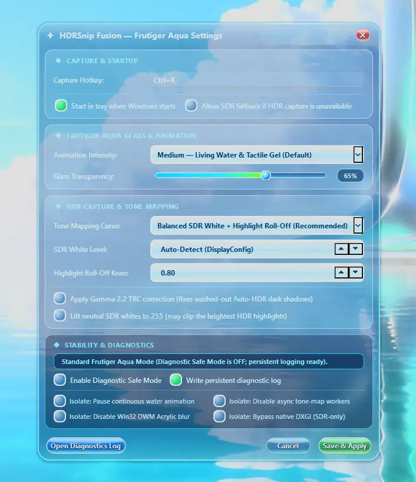

Free · Open source · Windows 10 & 11
HDR screenshots.
Aqua personality.
HDRSnip Fusion is a free Windows screenshot tool for capturing HDR, Auto HDR, and SDR screen content, selecting a region, adding annotations, and saving or copying the result. Wrapped in a Frutiger Aqua-inspired glass interface.
v0.1.1 · 64-bit Windows EXE · No Python installation required · MIT License
Official open-source GitHub repository: shadow728270/HDRScreenshot-FrutigerAqua · Releases & changelog
Built for HDR screenshots, not just screen grabs.
A focused region-capture workflow with configurable HDR-to-SDR conversion, annotation tools, and a distinct Frutiger Aqua design.
HDR & Auto HDR
Uses DXGI Desktop Duplication with scRGB capture and configurable tone mapping to make viewable SDR PNG screenshots from HDR-capable screen content.
Region capture
Select, reposition, and resize the desired area on your monitor before copying or saving the result.
Annotation tools
Draw with a pen or add rectangles, ellipses, lines, arrows, and text.
Frutiger Aqua interface
Transparent glass, water caustics, and soft glossy jelly-like controls with adjustable animation intensity.
Hotkey & system tray
Press Ctrl + Shift + X by default, customize your shortcut, and optionally start minimized to the tray when you sign in.
Multi-monitor awareness
Targets the monitor under your cursor, including mixed DPI/scaling setups. Capture behavior can depend on drivers and display settings.
One-click screenshot saving
Choose your preferred save folder once in Settings. Click Save or press Ctrl+S to save a unique PNG immediately; Ctrl+Alt+S opens Save As.
GitHub release updates
Check for new stable releases in Settings, verify the download, and confirm the update and restart when ready.
See HDRSnip Fusion in action
Real screenshots from the application, including the HDR-aware selection overlay and the Frutiger Aqua settings window.


Take your first screenshot
Open HDRSnip Fusion
Launch the executable and find its icon in the Windows notification area or hidden tray icons.
Press Ctrl + Shift + X
Select the area, annotate if you want, and copy the result or save a PNG.
The build is available as source and EXE, but hardware compatibility is still being evaluated. Windows SmartScreen may show a warning. HDR screenshot results vary with display configuration, games, and GPU drivers. Output is a tone-mapped SDR PNG, not a native HDR image file.
Frequently asked questions
Can HDRSnip Fusion capture an HDR game or Auto HDR desktop?
It is designed to do so using DXGI Desktop Duplication and tone mapping. Success and output appearance can vary based on graphics drivers, Windows HDR settings, and a game's presentation mode.
Does the app combine several exposures into an HDR screenshot?
No. HDRSnip Fusion captures the GPU framebuffer with DXGI Desktop Duplication, then tone-maps HDR content to a conventional SDR image. It does not stitch or merge multiple differently exposed screenshots.
Will the screenshot preserve actual HDR metadata?
No. The current export is a conventional PNG with configurable HDR-to-SDR tone mapping. It is intended to avoid washed-out or clipped-looking captures on supported configurations, not to save native HDR images.
Is it free and open source?
Yes. The application is free, and the Python source is published under the MIT License.
Do I need Python or an installer?
No. Download the standalone Windows EXE from the GitHub Releases page. Python is only required if you choose to run or build the source code.
What if the hotkey doesn't work?
Check the tray icon, open Settings to view the configured hotkey, and make sure another app isn't using the same shortcut. A previously saved hotkey can override Ctrl + Shift + X.
Built in the open
The complete Python source, build workflow, and issue tracker are public. Found a bug, want a feature, or have a screenshot to share?